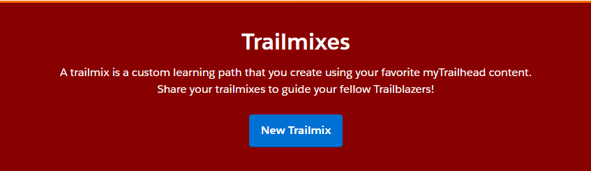
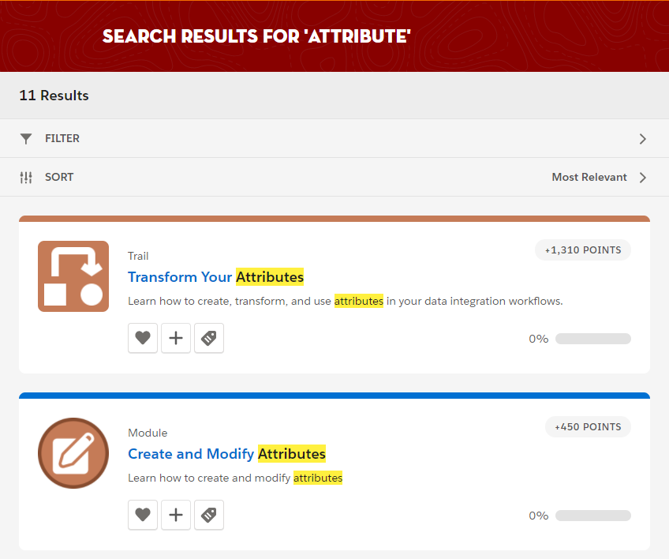
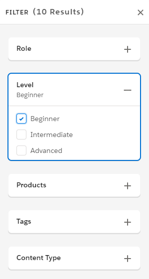
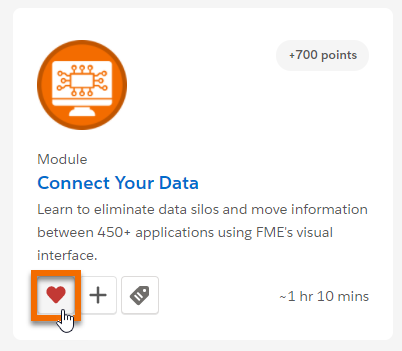
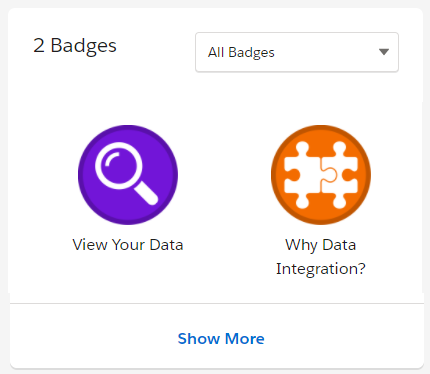

After completing this unit, you’ll be able to:
A trail is an ordered group of modules that provides a guided learning path to learning a new skill, product, or role.
A module covers a single learning topic. While trails are great for learning a comprehensive set of related topics, you can also mix and match modules freely. Say that you’re an FME user with five years of experience. It’s not worth your time to work through the Integrate Your Data with the FME Platform beginner trail—you know most of that stuff already. Instead, you can pick and choose the modules that address the gaps in your knowledge or to help you grow your career in other ways.
A module is broken down into units. Each unit covers a subtopic within a module and has a quiz at the end. When you ace the quiz, you get a healthy dose of points that add to the total displayed on your profile. When you’ve completed all of the units in a module, you earn a new badge.
When you earn points and badges, you advance ranks. When you begin you’re a Scout, and once you’ve earned your first badge you’re a Hiker. Eventually, you could even be an Adventurer (10 badges and 9,000 points).
Many units include an interactive FME exercise. A Resources section will provide you with links to interactive tutorials and starting workspaces when necessary.
Most FME Academy modules assume you have access to FME Desktop and FME Server. You can follow along with the step-by-step instructions using your own copy of FME. Many quizzes will ask questions that require you to work through the exercise.
If you need access to FME, you can:
There is a lot of learning material available for FME, and it’s organized in different ways. That’s why we give you a way to group modules and other content together and share them on your own terms. Did you ever make a mixtape or a music playlist? A trailmix is like a mixtape, but of modules, trails, and other external content instead of songs. You can keep a trailmix to yourself, or share it with anyone. Use a trailmix to set your own goals, or use it to onboard new employees by giving them a list of content to work through.
To create a trailmix, hover over the Learn tab, click Trailmixes, then click Create a trailmix. Give your trailmix a name, description, and custom URL, then click Next. From there, you can add whatever content you wish. Click  on any module, trail, project, or superbadge to add it to your trailmix. Once you’ve created a mix to your liking, share it with anyone you’d like by sending them the unique URL.
on any module, trail, project, or superbadge to add it to your trailmix. Once you’ve created a mix to your liking, share it with anyone you’d like by sending them the unique URL.

We want to make it easy to find what you’re looking for in the Academy. Use the search bar at the top of the screen to look for something specific, or you can filter modules and trails by feature area, product, role, or level. You can sort search results on the results page by clicking the Sort dropdown, which defaults to Most Relevant. If, for example, you're short on time, you can sort by quickest to complete. If you're getting close to that next rank, maybe you want to sort results by most points.

To filter, view the full list of modules and click a role, level, product, or tag at the top of the screen.

You can choose as many filters as you want. If you don’t see what you’re looking for and want to start over, click Clear filters.
Once you’ve found a module or trail that fits your needs, you don’t want to waste time trying to locate it again. Click  at the bottom left of a trail or module to favorite it. The next time you’re on the Academy, you’ll see the content you favorited at the top of the full list of modules or trails, respectively.
at the bottom left of a trail or module to favorite it. The next time you’re on the Academy, you’ll see the content you favorited at the top of the full list of modules or trails, respectively.

You can also see your favorites at any time by clicking your profile image in the top-right corner of Trailhead and choosing Favorites.
You've worked hard to earn points and badges, and your profile is the place to show them off. Click your profile image in the top-right corner of Trailhead and click Profile to see all the badges and points you've earned so far, and a breakdown of skills you've learned.
